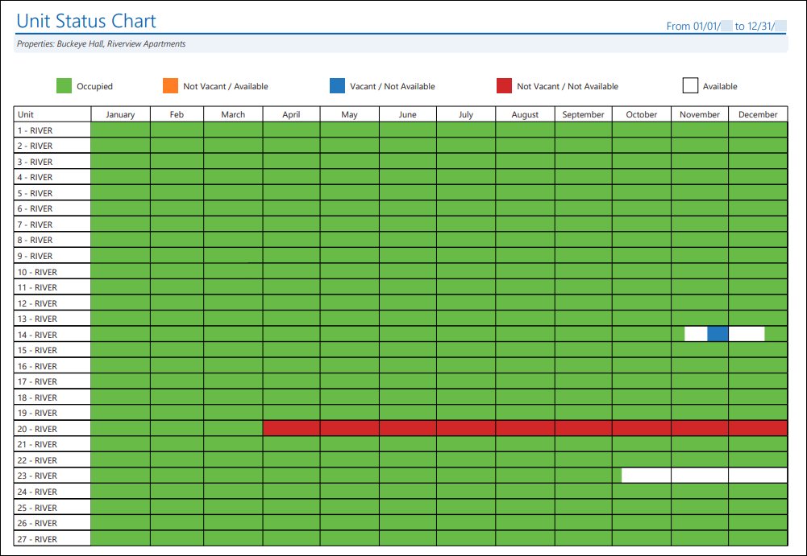
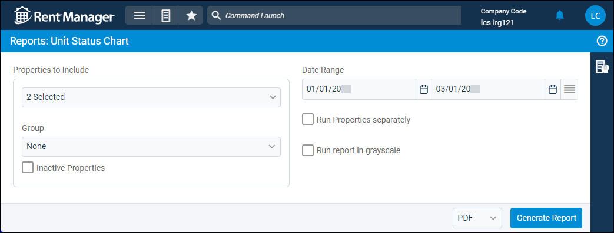
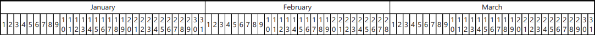
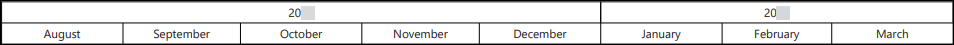

Source: https://rmxhelp.rentmanager.com/Topics/Express/Other/Reports/Unit-Status-Chart.htm
Unit Status Chart (Report)
The Unit Status Chart report displays the occupancy status of the rental units in one or more properties over a date range in the form of a color-coded grid to provide a visual representation of unit status history. The occupancy status of a unit is determined by reviewing whether any tenants are currently residing in the unit or if the unit has a unit status type assigned to it. The P&L report generates in landscape view and can easily be printed and used by a business as a reference for unit availability.
Related Privileges
| Group | Privilege | Column |
|---|---|---|
| Letter/Email Templates/Reports/Packets | Run reports | Enabled |
| Run accounting reports | Enabled |
Additionally, on the Reports tab, you must have access to Unit Status Chart.
For more information, refer to Control User Access.
To view the Unit Status Chart report, do the following:
-
Go to
 arrow_forward Rental Info arrow_forward Occupancy arrow_forward Unit Status Chart.
arrow_forward Rental Info arrow_forward Occupancy arrow_forward Unit Status Chart.
The Reports: Unit Status Charge page displays. -
Adjust the report options as desired. Each option is described below.
-
Generate the report in your desired file format(s).
Related Preferences
Reports may look different depending on whether or not the Use modernized report style system preference is enabled. For more information, refer to General Report Options (System Preferences).

Report Options
The report options described below determine what data displays in the report.

Properties to Include
Select each property or a property Group to be included in the report.
More Information
This field populates only with the properties to which you have access. Your access to properties can be managed from your user account or on the property's details page. For more information, refer to Limit Access to a Property.
Optionally, check Show Inactive Properties to include properties that are no longer active.
More Information
Properties with the Property Type of RV/Campground or Short Term Rental do not display in this report. Short term rental property information is available in reports listed in the Short Term Rentals report category.
Date Range
Enter or select the date range to determine the data that displays in the report.
In the Date Range section, set the From and To dates for which the report should examine data.
These fields automatically populate with today’s date. Enter a different date or select a date from the calendar. Alternatively, adjust the dates using the available preset buttons or click  to open more options for setting a date range.
to open more options for setting a date range.
Run Properties Separately
Check to generate a separate report for each selected property. Otherwise, all selected properties are combined into a single report.
Run Report in Grayscale
Check to generate the report using different shades of gray instead of a color-coded chart.
Report Results
The report results are described below including, if applicable, section, column, and subreport or tab descriptions.
Report Header
The report header displays the report name and key information selected in the report options, such as date information and which properties were examined in the report.
Chart Descriptions
The report is organized with a chart of color-coded information based on the report options selected. Each column and row that appears in the chart is described below.
| Item | Description |
|---|---|
|
Columns |
The number of columns that display in the chart is dependent on the Date Range selected in the report options. If the Date Range spans three full months or fewer, each day in that span has a column in the chart, with the months displaying above the days:
 If the Date Range spans more than three months but less than sixteen months, each month in that span has a column in the chart, with the years displaying above the months:
 If the Date Range spans beyond sixteen months, each year in that span has a column in the chart:
|
|
Rows |
Each unit within the properties selected in the report options has a row in the report. The intersection of the columns and rows creates cells, which are shaded with a different color depending on the status of the unit (row) at the given day/month/year (column). |
Colors
When generated without the Grayscale report option enabled, the report uses five colors to display the status of each unit included in the report:
| Color | Description |
|---|---|
|
|
Cells are shaded green if the unit (row) was occupied by a tenant or reserved by a prospect during the day/month/year (column). |
|
Not Vacant/Available |
Cells are shaded yellow if the unit (row) had a unit status type with Show As Available enabled but Show As Vacant disabled during the day/month/year (column). For example, if a unit is occupied by a tenant (Not Vacant), but that tenant has given you their notice and you would like to begin marketing that unit (Available). |
|
Vacant/Not Available |
Cells are shaded blue if the unit (row) had a unit status type with Show As Available disabled but Show As Vacant enabled during the day/month/year (column). For example, a unit may not currently have a tenant (Vacant), but there may be a rehabilitation project taking place in the unit, making it not rentable (Not Available). |
|
Not Vacant/ Not Available |
Cells are shaded red if the unit (row) had a unit status type with both Show As Available and Show As Vacant disabled during the day/month/year (column). For example, you may have a unit that is reserved solely for members of your leasing staff (Not Vacant) and the unit is never be available to tenants, even if the current leasing agent moves out (Not Available). |
|
|
Cells are unshaded (white) if the unit (row) was vacant (available) and had no unit status type during the day/month/year (column). |